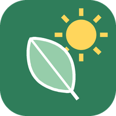

Nivå 1
☆☆☆☆
Fotosyntesen: sätt in det bladet behöver.
Tryck på en sak, sedan på en plats i bladet.
Fabriken går!

Vad går in i bladet – och vad kommer ut?
Gratis · ingen inloggning · skolappar.com
Biologi, åk 4–6, centralt innehåll: ”Näringskedjor och kretslopp i närmiljön. Djurs, växters och svampars samspel med varandra och hur några miljöfaktorer påverkar dem. Fotosyntes och cellandning.”
Bladet är en fabrik. Barnet trycker på en sak i brickan och sedan på en plats i fabriken: in på vänstersidan, ut på högersidan. Fotosyntesen kräver vatten, koldioxid och ljus och ger socker och syre. Cellandningen är motsatsen: socker och syre in, koldioxid, vatten och energi ut. Fabriken räknas ut direkt – stämmer inte byggstenarna säger Kotten vad som fattas eller vad som hör till den andra sidan, och barnet får försöka igen utan att något går förlorat. Nivå 1–2 bygger fotosyntesen (nivå 2 med jord och kväve som lockar fel), nivå 3 kräver att barnet även sätter det som bildas, nivå 4 vänder hela reaktionen till cellandning. Källa: Skolverket, läroplanen för grundskolan (Lgr22).
Tryck på en sak, sedan på en plats i bladet.
Fabriken går!